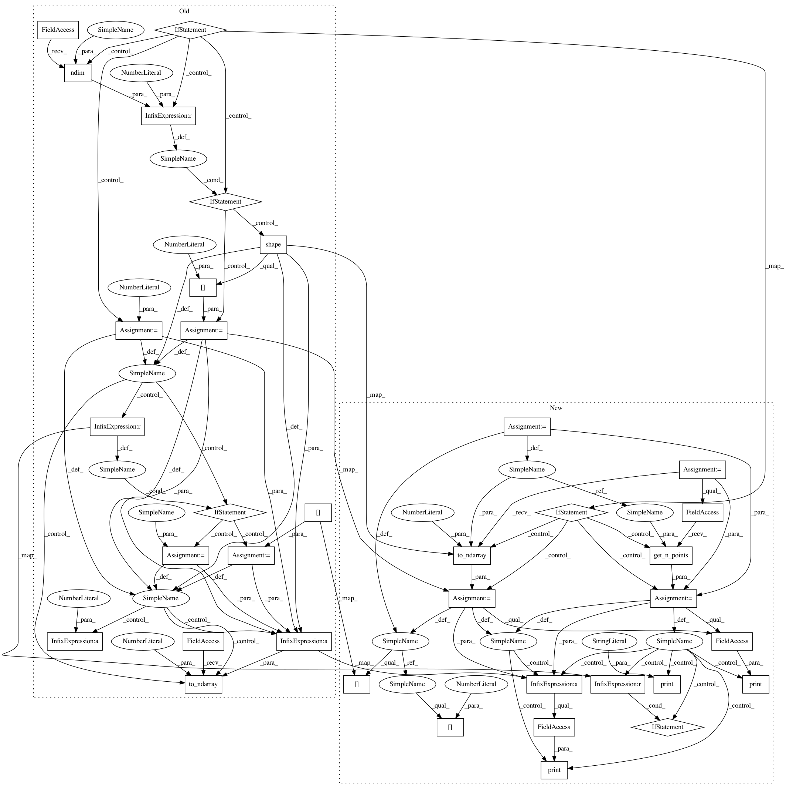

2b4d328be9d22522eca9a91d39eb4c13c3afafe3,geomstats/learning/frechet_mean.py,,_adaptive_gradient_descent,#Any#Any#Any#Any#Any#Any#Any#,181
Before Change
tau_mul_up = 1.6511111
tau_min = 1e-6
tau_mul_down = 0.1
if point_type == "matrix":
raise NotImplementedError(
"The Frechet mean with adaptive gradient descent is only"
" implemented for lists of vectors, and not matrices.")
n_points = 1
if gs.ndim(points) == 2:
n_points = gs.shape(points)[0]
if n_points == 1:
return points
if weights is None:
weights = gs.ones((n_points,))
//weights = gs.array(weights)
//weights = gs.to_ndarray(weights, to_ndim=2, axis=1)
sum_weights = gs.sum(weights)
if init_point is None:
current_mean = points[0]
else:
current_mean = init_point
tau = 1.0
iteration = 0
logs = metric.log(point=points, base_point=current_mean)
current_tangent_mean = gs.einsum("...,...j->j", weights, logs)
current_tangent_mean /= sum_weights
sq_norm_current_tangent_mean = metric.squared_norm(
current_tangent_mean, base_point=current_mean)
while (sq_norm_current_tangent_mean > epsilon ** 2
and iteration < max_iter):
iteration = iteration + 1
shooting_vector = gs.to_ndarray(
tau * current_tangent_mean,
to_ndim=2)
next_mean = metric.exp(
tangent_vec=shooting_vector,
base_point=current_mean)
logs = metric.log(point=points, base_point=next_mean)
After Change
current_mean: array-like, shape=[n_samples, dim]
Weighted Frechet mean of the points.
if point_type == "matrix":
raise NotImplementedError(
"The Frechet mean with adaptive gradient descent is only"
" implemented for lists of vectors, and not matrices.")
tau_max = 1e6
tau_mul_up = 1.6511111
tau_min = 1e-6
tau_mul_down = 0.1
n_points = geomstats.vectorization.get_n_points(
points, point_type)
points = gs.to_ndarray(points, to_ndim=2)
if n_points == 1:
return points[0]
if weights is None:
weights = gs.ones((n_points,))
sum_weights = gs.sum(weights)
current_mean = points[0] if init_point is None else init_point
tau = 1.0
iteration = 0
logs = metric.log(point=points, base_point=current_mean)
current_tangent_mean = gs.einsum("...,...j->j", weights, logs)
current_tangent_mean /= sum_weights
sq_norm_current_tangent_mean = metric.squared_norm(
current_tangent_mean, base_point=current_mean)
print("init")
print(current_tangent_mean.shape)
while (sq_norm_current_tangent_mean > epsilon ** 2
and iteration < max_iter):
iteration += 1
shooting_vector = tau * current_tangent_mean
next_mean = metric.exp(
tangent_vec=shooting_vector, base_point=current_mean)
logs = metric.log(point=points, base_point=next_mean)
next_tangent_mean = gs.einsum("...,...j->j", weights, logs)
next_tangent_mean /= sum_weights
sq_norm_next_tangent_mean = metric.squared_norm(
next_tangent_mean, base_point=next_mean)
if sq_norm_next_tangent_mean < sq_norm_current_tangent_mean:
current_mean = next_mean
current_tangent_mean = next_tangent_mean
sq_norm_current_tangent_mean = sq_norm_next_tangent_mean
tau = min(tau_max, tau_mul_up * tau)
else:
tau = max(tau_min, tau_mul_down * tau)
print(current_tangent_mean.shape)
if iteration == max_iter:
logging.warning(
"Maximum number of iterations {} reached. "
In pattern: SUPERPATTERN
Frequency: 3
Non-data size: 36
Instances
Project Name: geomstats/geomstats
Commit Name: 2b4d328be9d22522eca9a91d39eb4c13c3afafe3
Time: 2020-04-17
Author: ninamio78@gmail.com
File Name: geomstats/learning/frechet_mean.py
Class Name:
Method Name: _adaptive_gradient_descent
Project Name: geomstats/geomstats
Commit Name: 3ac09b538111f2a828ca6f136206abab29f09a68
Time: 2020-04-16
Author: ninamio78@gmail.com
File Name: geomstats/learning/frechet_mean.py
Class Name:
Method Name: _adaptive_gradient_descent
Project Name: geomstats/geomstats
Commit Name: 649a569555396206384c92a7e2a235f513bfc3be
Time: 2020-04-17
Author: ninamio78@gmail.com
File Name: geomstats/learning/frechet_mean.py
Class Name:
Method Name: _adaptive_gradient_descent